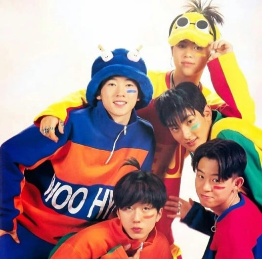
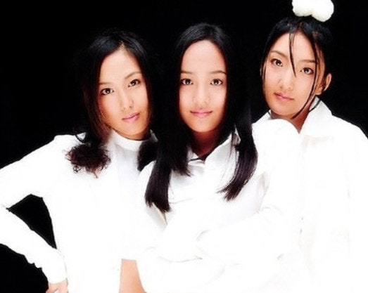
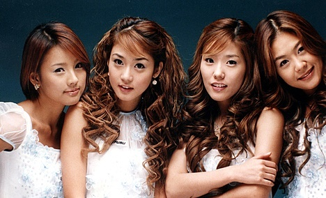

1세대 K-POP의 특징
1세대 아이돌은 1997부터 2004년까지 활동한 K-POP그룹이다. SM, DSP 등의 대형기획사들이 주도적으로 팀을 기획, 운영하였고 팬덤 문화가 시작되었으며 강한 안무와 화려한 퍼포먼스가 강조되었다.
대표 아티스트
- H.O.T
- S.E.S
- 핑클
아티스트 정보
- 정보
- 대표곡
- 특징
- 정보
- 대표곡
- 특징
- 정보
- 대표곡
- 특징
1. H.O.T
| 소속사 | SM Entertainment |
| 데뷔 | 1996 |
| 팬덤명 | Club H.O.T |
| 상징색 | 흰색 |
- Candy
- 행복
- We Are The Future
- Warrior’s Descendant
- 빛
- 1세대 아이돌 문화와 팬덤 시스템의 시작을 연 그룹.
- 강렬한 댄스곡과 퍼포먼스로 10대 대중문화를 주도.
- 대한민국 아이돌 산업 기반을 확립한 상징적 존재.
2. S.E.S
| 소속사 | SM Entertainment |
| 데뷔 | 1997 |
| 팬덤명 | Friends |
| 상징색 | 연두색/파스텔 |
- I'm Your Girl
- Dreams Come True
- Love
- Just A Feeling
- Be Natural
- 청순·세련된 콘셉트로 여성 아이돌 대표 주자.
- 뛰어난 보컬 조합과 트렌디한 음악 스타일로 인기.
- 1세대 걸그룹 시장 확장에 큰 역할.
3. 핑클(Fin.K.L)
| 소속사 | DSP Media |
| 데뷔 | 1998 |
| 팬덤명 | 프린스 |
| 상징색 | 파스텔계열 |
- 영원
- NOW
- Forever Love
- Blue Rain
- 당신은 사랑받기 위해 태어난 사람
- 부드럽고 감성적인 컨셉으로 대중적 사랑 획득.
- 발라드 히트곡 다수 보유, 국민적 인기 걸그룹.
- 멤버 개별 활동도 활발하며 상징적 존재로 남음.